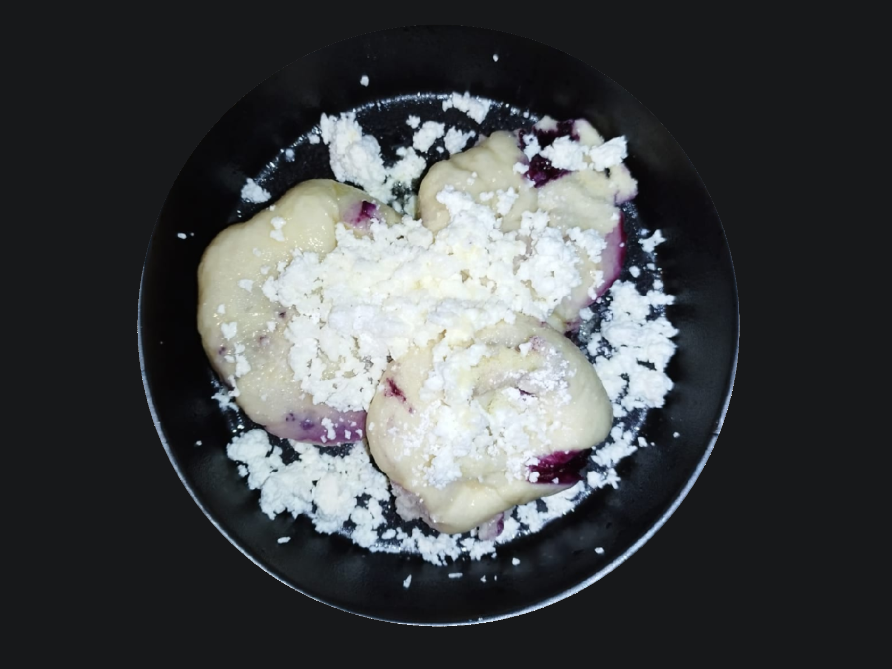

Kynuté knedlíčky s borůvkami
Ingredience:
Počet porcí: 4
| Droždí | 10 g |
|---|---|
| Hrubá mouka | 500 g |
| Olej | 14 ml |
| Mléko | 250 ml |
| Cukr krupice | 24 g |
| Vejce | 1 ks |
| Borůvky | 150 g |
| Máslo | dle chuti |
| Tvrdý tvaroh | dle chuti |
| Cukr moučka | dle chuti |
Postup:
Do mísy rozdrolte droždí a přidejte curk krupici, poté směs jemně promíchejte.
Dále zaprašte moukou a zalijte asi 1/5 vlažného mléka. Znovu promíchejte
a lehce zaprašte moukou. Kvásek přikryjte utěrkou a nechte v teple kynout zhruba 5 až 10 minut.
Do větší mísy nasypte zbytek mouky, přidejte vajíčka, olej, zbytek mléka
a špetku soli. Do směsi přidejte již lehce nakynutý kvásek a míchejte,
dokud vám nevznikne hladké těsto, které následně necháte znovu nakynout.
Tentokrát těsto nechte kynout zhruba hodinku.
Když je těsto nakynuté zhruba na dvojnásobek původní velikosti, přesuňte
ho z mísy na předem pomoučněný vál (případně postačí stůl).
Těsto lehce zaprašte moukou z obou stran, aby se vám nelepilo na váleček a následně ho rozválejte
do tloušťky asi 1 cm.
Vyválené těsto nakrájejte na několik stejných dílů. Velikost záleží pouze na tom, jak velké knedlíčky chcete.
Nezapomeňte však, že těsto při vaření ještě nakyne.
Nyní už stačí jen naplnit mraženými či čerstvými borůvkami (případně jiným ovocem).
Do kulata zabalené knedlíčky nechte na pomoučněné desce ještě jednou pár minut nakynout.
Nakynuté plněné knedlíčky postupně uvařte na páře.
Do pařáčku (postačí i vetší cedník) vkládejte knedlíčky s dostatečnými rozestupy, protože se
v páře ještě zvětší. Hrnec i s pařáčkem přiklopte pokličkou a nechte cca 5 až 10 minut vařit, podle velikosti knedlíčků.
Po dovaření knedlíčky propíjejte vidličkou, aby měla pára kudy uniknout.
Nakonec dozdobte tvrdým tvarohem, máslem a moučkovým cukrem dle chuti.
Rozhodně ale s ničím nešetřete!